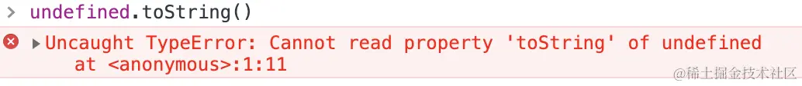

JavaScript 基础 - 数据类型、运算符、类型转换
数据类型
原始（Primitive）类型
原始（Primitive）值一般叫做栈数据（一旦开了个房间、不可能在这个房间里对其进行修改）
在 JS 中，存在着以下几种原始值，分别是：
number（typeof 1 === "number"）string（typeof '' === "string"）boolean（typeof true === "boolean"）null（typeof null === "object"）undefined（typeof undefined === "undefined"）symbol（typeof Symbol() === "symbol"）bigInt（typeof 10n === "bigint"）(没有正式发布但即将被加入标准的原始类型)
原始类型存储的都是值，是没有函数可以调用的，如 undefined.toString() 会报错，一般看到的 '1'.toString() 可以调用成功是因为实际上它已经被强制转换成了 String 类型即对象类型，所以才可以调用 toString 函数

undefined 和 null 的区别
相同点：用 if 判断时两者都会被转换成 false
不同点：
number转换的值不同1
2Number(null); // 0
Number(undefined); // NaNnull有值，但这个值是空值，表示为空，代表此处不应该有值的存在。一个对象可以是null代表是个空对象，null一般用作占位undefined是未定义，表示不存在，完全没有值的意思。JavaScript是一⻔动态类型语言，成员除了表示存在的空值外还有可能根本就不存在(因为存不存在只在运行期才知道)，这就是undefined的意义所在
typeof null 的结果为什么是 object
typeof null 会输出 object，这是 JS 存在的一个悠久 Bug，在 JS 的最初版本中使用的是 32 位系统，为了性能考虑使用低位存储变量的类型信息，000 开头代表是对象，然而 null 表示为全零，所以将它错误的判断为 object
为什么 0.1 + 0.2 !== 0.3？
本博客所有文章除特别声明外，均采用 CC BY-NC-SA 4.0 许可协议。转载请注明来源 Donna'Log！